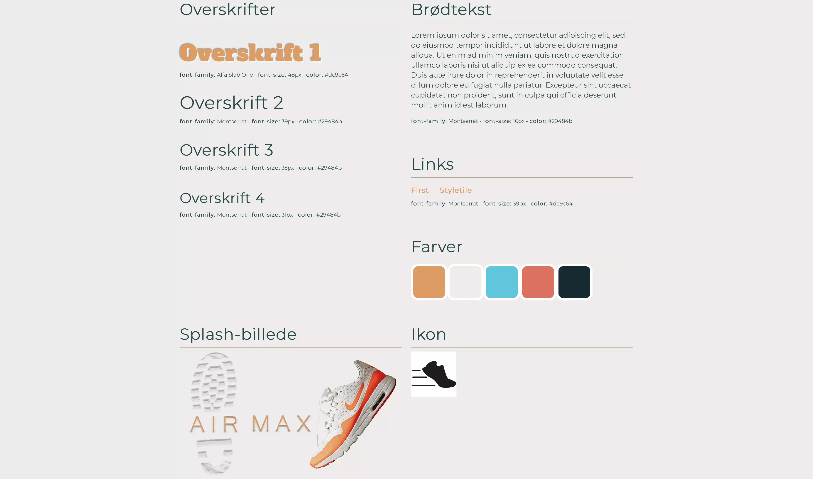
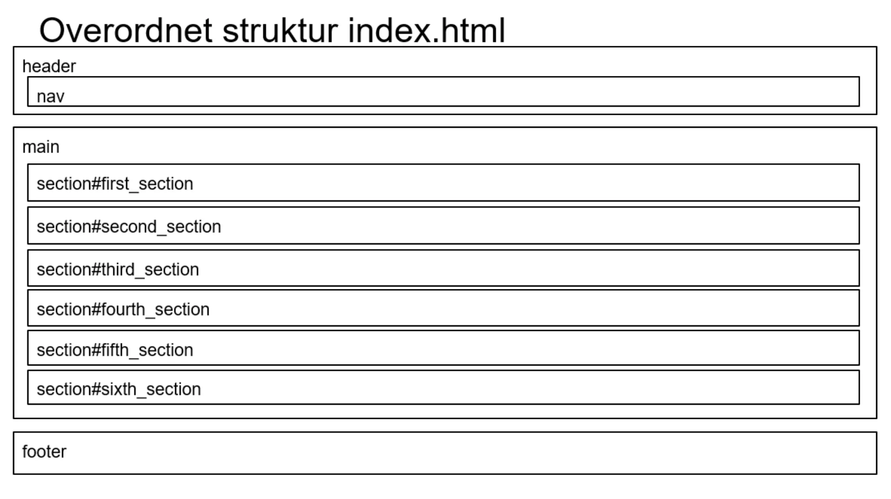

03.03.02
Pitch
Opgaven
I tema 03 havde vi lavet en Hi-Fi prototype ud fra nogle opgave krav, og vi skulle afslutte temaet med at pitche vores prototype. Vi skulle snakke om vores research, design og test af prototypen og prototypens UX/UI. Pitchen skulle vare 5 min, hvorefter vi ville få 10 min feedback på vores pitch og hjemmeside.
Klik her for at se HjemmesidenMin rolle
Pitchen skulle laves individuelt over sin egen webshop. Jeg lavede selv min pitch og et kort powerpoint over min pitch. Jeg blev også udvalgt for min gruppe til at pitch foran vores klasse, hvor jeg efter fik feedback af både elever og undervisere.
Hvad har jeg lært?
Dokumentation
Det var vigtigt at jeg i samarbejde med min prototype opgave havde dokumenterede alt mit arbejde, da jeg skulle præsentere det i min pitch. Jeg valgte at vise min research inden og de test jeg havde udført i min pitch, som grundlag for mine ændringer og de ændringer jeg ville lave i fremtiden. Jeg valgte at dokumentere mit arbejde i form af screen dumps, tidliger prototyper og resultater som jeg så kunne bruge videre hen i min process. At dokumentere sit arbejde er vigtigt for at kun præsentere sit produkt og de valg man har taget. Samtidig er det et værktøj for en selv til at se hvor man kan forbedre sig, og en reference man kan tag brug af til senere projekter. Vi har brugt dokumentation til næste alle vores projekter, både for egen skyld og for at kunne præsentere vores produkter. Dette gjorde vi f.eks i tema 05 da vi skulle præsentere vores redesign for undervisere og virksomheden.
Pitch
Vi lærte også om grundelementerne inden for pitching. Det er forskellige faktorer der er vigtige når man pitcher. Man skal fange opmærksomheden af brugeren og give den mest kritiske information inden for den tidsramme man har. Anslaget i et pitch er meget vigtigt, da du skal fange opmærksomheden fra dit publikum. Jeg brugte et kendt citat til at fange mit publikum, hvorefter jeg præsenterede problemstillingen. Herefter viste jeg så produktet/løsningen og forklarede som om mit produkt og de valg jeg havde truffet pga. min research. Til sidste afsluttede jeg pitchen med en konklusion og fremtidsperspektivering, omkring ændringer/implementationer på hjemmesiden. Jeg brugte hoved-krop-hale modellen som vi blev introduceret for, da den skaber et godt flow som er nemt og forståeligt at følge med i, uden at miste interesse. Vi har brugt værktøjet om at pitche på flere af vores produkter i de senere forløb, da det er et godt værktøj til at kunne præsentere et produkt hurtigt, med kun de vigtigste detaljer. Jeg brugte det både i animations forløbet og redesign forløbet til at præsentere mine produkter over for grupper og undervisere.
Refleksion
At pitche er et super brugbart værktøj at have med i bagagen, især til arbejdslivet. Det en måde at vise dit produkt på, og hvordan det virker. En dygtig pitch kan endda bruges til at “sælge” ting til andre individer. Det at pitche er et værktøj jeg altid vil benytte mig af og bygge videre på.
Læs mere om andre projekter ved at klikke her